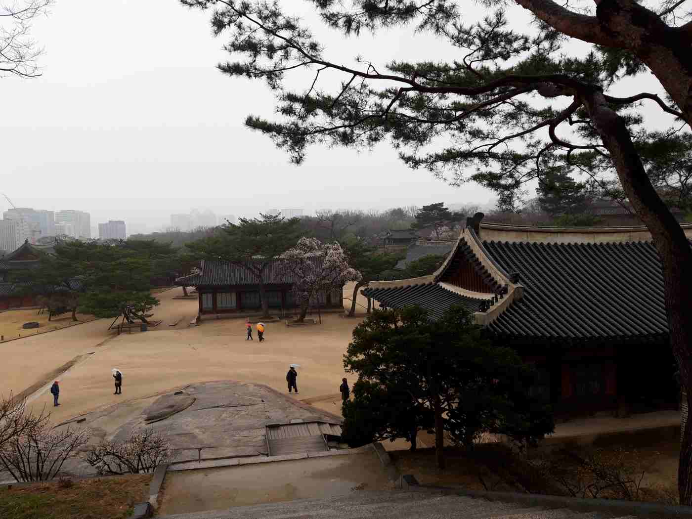
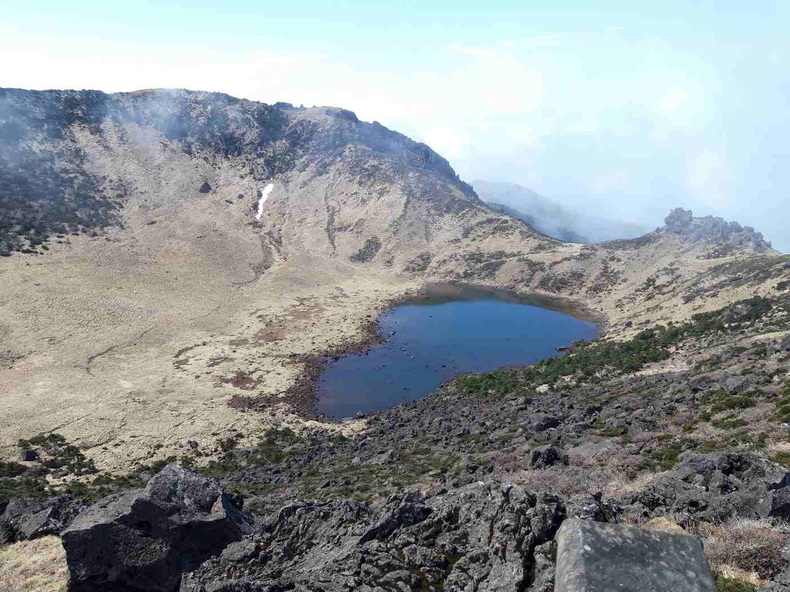
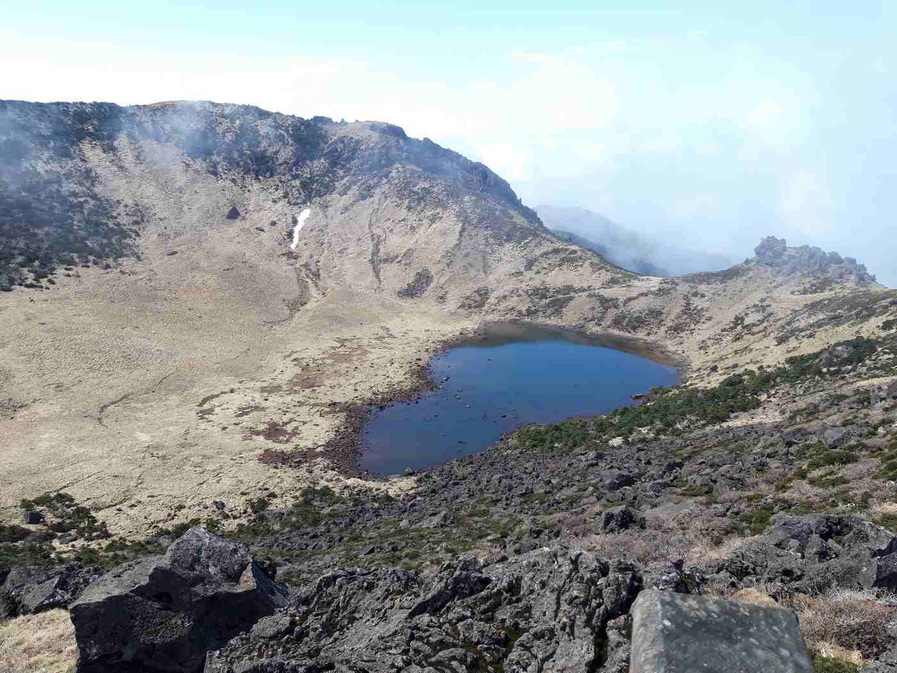

Corée du Sud - 2024
Seoul
A notre arrivée à Séoul, on commence par la montée à la tour de Namsan à pied, pas par le téléphérique ! On y découvre une vue sur Séoul, une tour qui n'est pas des plus jolies mais la ballade est agréable, des cerisiers quasi en fleur, un premier aperçu de la street food coréenne avec de délicieux Hotteok, une sorte de pancake fourré au miel et aux cacahuètes. On découvre au pied de la tour des milliers et des milliers de cadenas de toutes les couleurs accrochés par des couples d'amoureux.On poursuit le lendemain par les visites au coeur de la ville, par les palais de Changgyeonggung et Deoksugung ou encore celui de Gyeongbokgung. Le dépaysement est complet et le temps de saison plutôt agréable, nuageux sans plus et 15° environ idéal pour randonner.



On y découvrira notamment le magnifique pavillon Gyeonghoeru au milieu d'un étang artificiel à l'intérieur du palais Gyeongbokgung.
Ci-dessous, une photo prise de l'intérieur du palais de Deoksugung où l'on voit le contraste avec la ville plus moderne de Séoul en arrière plan. On patientera sur ce palais jusqu'à 14h pour assister à la relève de la garde (cérémonie avec une cinquantaine de gardes et musiciens en costumes traditionnels)

On termine notre séjour dans la capital par la visite de la Lotte World Tower qui offre une vue unique à 360° et à près de 500 m de haut .
Région de Busan
On prends le train au matin du 31 mars pour le sud-est de la Corée du Sud et les visites des villes de Gyeongju et Busan.La halte sur Gyeongju noue permet de visiter le temple de Bulguska, la grotte de Seokguram ou le parc Daerungwon célèbre pour ces Tumuli (23 grandes tombes de rois et reines). On profite tout au long des visites des cerisiers en fleurs, c'est la pleine saison, on n'avait pas choisi la période pour cela, c'est donc une très bonne surprise !


Ile de Jeju
Décollage pour l'île de Jeju avec comme première randonnée la montée du volcan Hallason qui culmine à 1950 m avec d'innombrables et d'interminables marches ! Le tout avec un temps très chargé et très humide nous permettant tout juste de deviner un premier lac. Le reste de la montée, au pas de course, car la randonnée est contrôlée par des points de passages qui se ferment au fur et à mesure de la journée est éreintante. On arrive finalement au sommet et une improbable éclaircie de 10 min nous dégage le ciel et nous offre une vue dégagée sur le cratère et son lac. La descente commence alors, avec tout autant de marches.... 


Par manque de temps, et par fatigue, on ne pourra pas visiter le Manjanggul Lava Tube, des tunnels de lave naturels. On se rendra néanmoins jusqu'à la cascade cheonjeyeon waterfalls à l'extrémité est de l'île.

Région de Suncheon

On se rends ensuite dans Suncheon pour visiter la baie, où l'intérêt reste mitigé. On restera plus longtemps à flaner dans les jardins somptueux du "Suncheon Bay National Garden"